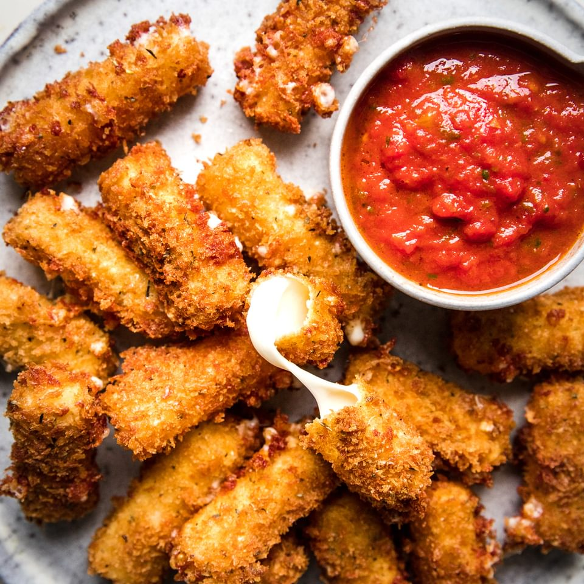

Homemade Mozzarella Sticks

How to make Homemade Mozzarella Sticks
Making great homemade mozzarella sticks is an art, but practice following this recipe and you'll get there in no time.
Use fresh mozzarella, mold it into sticks, and freeze the sticks to harden the cheese before cooking.
Coat the cheese sticks in egg, seasonings, and bread crumbs, and then deep fry to perfection!
Ingredients
- Fresh mozzarella cheese
- Basil
- Oregano
- Italian seasoning
- Flour
- Panko breadcrumbs
- 3 Eggs
- Canola oil
Steps
- Shape fresh mozzarella cheese into sticks
- Freeze cheese sticks for 45 minutes
- Combine basil, oregano, italian seasoning, and panko in a medium bowl
- Crack 3 eggs and stir into a seperate medium bowl
- Put flour into a third medium bowl
- Remove cheese sticks from freezer, and roll each stick in egg, seasonings, and flour, repectively
- Place canola oil in a large pot on the oven and bring to boil
- Place coated cheese sticks into boiling oil and cook to desired level